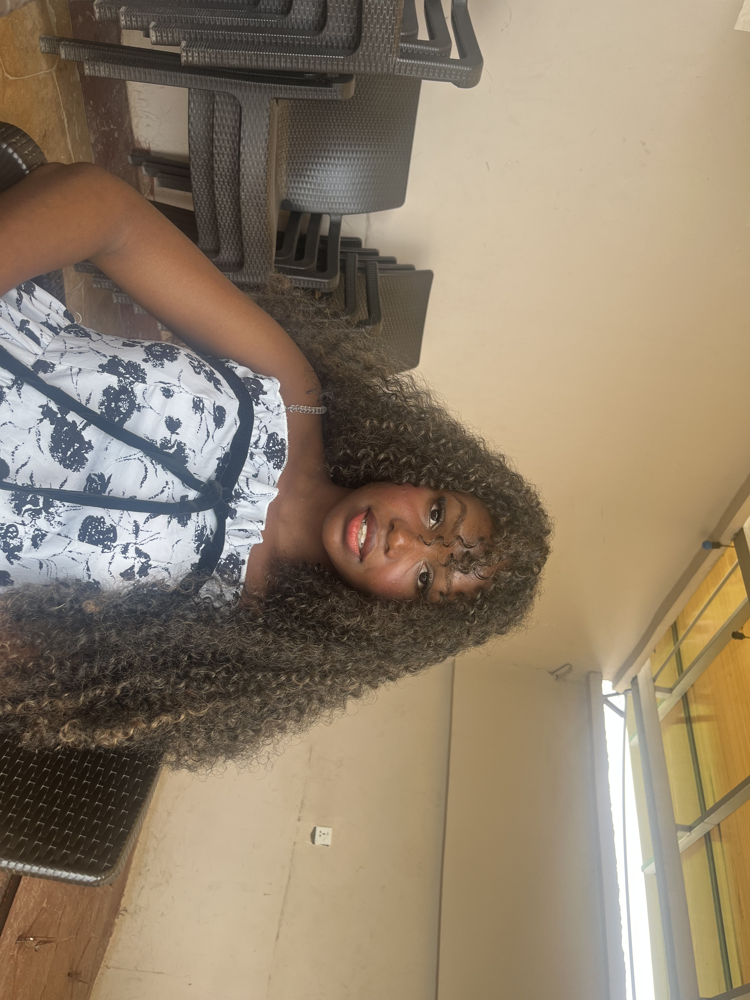

KAREN SHEKWODUZA
Customer care representative| Communication| Social Media Manager
Abuja,Nigeria | 09160210681| sunnykaren9@gmail.com
PROFESSIONAL SUMMARY
Friendly, organised, and customer focused professional with experience communicating with customers and potential
buyers through whatsapp bussiness while supporting an electronic bussiness. Skilled in providing clear product information, responding
professionally to enquires, and maintaining positive customer relationships. Possesses strong writen communication, interpersonal and organizational skills,
with the ablity to learn quickly and adapt to new systems. Eager to contribute to a customer care team by delivering excellent customer service and helping
customers find solution to their needs.
PROFESSIONAL EXPERIENCE
Social Media and Content Manger
Dune electronics | Abuja,Nigeria | 2026
- Communicated with customers and buyers through whatsapp bussiness, providing product information and purchasing details.
- Explained the feautures and benefits of phones, laptops, tablets, and other electronic devices in a clear customer friendly languege.
- Engaged potential customers online and shared relevant information to support their purchasing decisions.
- Prepared clear products descriptions and promotional content to help customers understand available products.
- Maintained professional communicaton across all digital platforms to support customer engagement.
- Assisted with online product promotion and helped to maintain a consistent bussiness presence on social media.
EDUCATION
Bachelor of arts in history and diplomatic studies
University of Abuja, Abuja, Nigeria
CORE SKILLS
- Customer service and customer engagement
- Written and verbal communication
- Customer enquiry handling
- Whatsapp bussiness management
- Product informaton and support
- Proffesional communication
- Problem solving and adaptability
- Organisation and time management
- Canva and capcut
ADDITIONAL STRENGTHS
- Willingness to learn new customer service systems and procedures
- Ability to communicate information clearly and professionally
- Strong attention to detail and a customer focused attiutude
- Ability to work independently and collaborate with a team